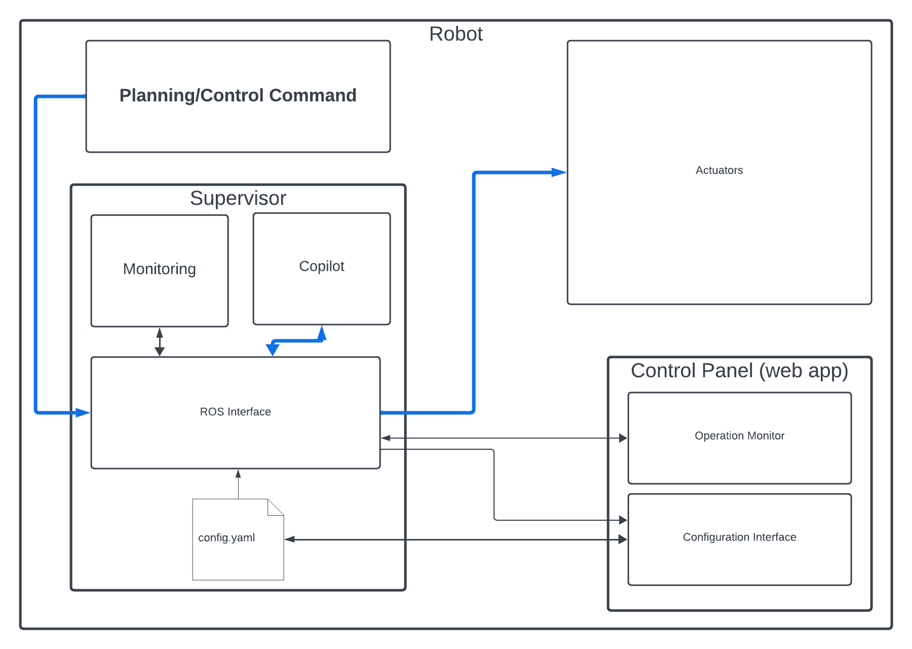

Introduction
The 3Laws Robotics Supervisor is a software package that provides a control filter to add collision avoidance without compromising performance. The Supervisor contains a diagnostic module that monitors multiple metrics that indicate safety and performance.
Multiple ROS version are supported:
Ubuntu Distribution |
ROS1 version |
ROS2 version |
|---|---|---|
22.04 |
N/A |
Humble/Iron |
20.04 |
Noetic |
Galactic/Foxy |
18.04 |
Melodic |
N/A |
Architecture
The Supervisor has 3 main functions:
Run-time assurance: The core of the collision avoidance capability in the Supervisor is a filter that operates at the controller level to ensures that the directional commands sent to the robot do not violate proximity constraints relative to laserscan data. This component runs in near-real-time on the robot.
Robot Diagnostics: The Robot Diagnostic Monitor is a collection of metrics calculated to indicate the robot health and safety. Data is aggregated on the robot by this module and is then published for use by other ROS nodes. Optionally, these metrics can be published to a cloud dashboard that 3Laws can set up.
Control Panel: The Control Panel is an optional web-based application that guides the user through the configuration of the Supervisor. Based on the data provided by the user, it creates (or updates) a configuration file used by the Supervisor’s various capabilities. The Control Panel has some abilities to visualize the robot’s safety. This component does not need to be active (or running) during operation of the robot, except as desired for visualizing the metrics available through it. Once the Supervisor is configured through the Control Panel, turning off the lll_control_panel.service is a reasonable step.
{kind=link}

Supervisor interfaces
The 3Laws Robotics Supervisor currently requires that the robot uses the Robot Operating System (ROS). The Supervisor is a ROS node that subscribes to the robot’s state, sensors, planning, computational measures, perception, and control commands. If the RTA capability is enabled, Supervisor will also publish safety-filtered control commands to the robot’s actuators.
Run-time assurance
The run-time assurance capability, also referred to as Copilot, is a filter that operates at the control rate. It is designed to ensure that the robot’s control commands avoid collisions by maintaining minimum distances to proximity to points measured by a laser scanner. Based on formal mathematical proven methods, the Copilot is able to prevent the robot from colliding while still allowing the robot to reach maximum performance when the system is far from any obstacles in its current travel direction.
This ability allows development of the robot’s control and planning algorithms without worrying about collision avoidance.
The Copilot uses basic kinematic and dynamic models for the robot in order to predict potential collisions. Supervisor currently supports differential-drive (able to rotate-in-place and translate), single-track steered, and omni-directional (able to translate sideways in addition to rotations and forward/back motion) vehicles.
Robot diagnostics monitor
The diagnostics that monitors and compute metrics about the robot health and safety. The computed metrics are published on ROS topics that are available locally on the robot. High frequency versions of the metrics can be used to monitor the robot’s health and safety in real-time. In other words, these metrics are available to other processes on the robot which can then use the information to make decisions.
The metrics are also summarized and optionally sent to a cloud database for display and analysis. 3LawsRobotics cloud dashboards help diagnose issues the robot might have. These Dashboards are made using Grafana.
Configuration
For effective operation, the Supervisor needs to be configured. Details for this step are presented in Using Supervisor. The Control Panel also visualizes operation of the Supervisor’s Copilot.
Diagnostic Messages
ADD LIST OF TOPICS PUBLISHED BY SUPERVISOR WITH EXPLANATIONS